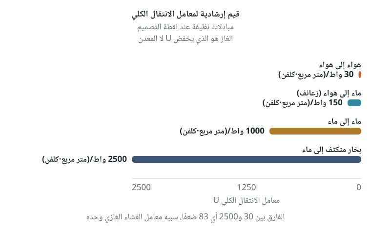

معامل انتقال الحرارة الكلي
المعامل الكلي U يختصر سلسلة المقاومات بين مائع وآخر: 1/U = 1/h_i + R_wall + 1/h_o. هو الرقم الذي يُضرب في المساحة وفرق الحرارة اللوغاريتمي لحساب الحمل، لا معامل سطح واحد.
الحرارة تنتقل بين مائع ساخن وآخر عبر ثلاث مقاومات متتالية على الأقل: غشاء المائع الساخن، وجدار المعدن، وغشاء المائع البارد، ويُضاف إليها غشاء التلوّث على كل سطح. تُجمع المقاومات كما تُجمع مقاومات التوالي الكهربائية، فيكون 1/U = 1/h_i + t/k + 1/h_o + R_f,i + R_f,o. الحكم هنا أن المقاومة الأكبر تهيمن: في مبادل ماء-هواء يكون معامل الغشاء الغازي نحو 20 واط/(م²·كلفن) أي مقاومة 0.05، بينما الماء عند 5,000 يعطي مقاومة 0.0002، فيساوي U تقريبًا معامل الغشاء الغازي وحده (نحو 20). ولذلك يُستعمل التزعيف لزيادة مساحة الغاز، ولا يفيد تلميع المعدن أو تغيير سماكته شيئًا في هذه الحالة. أما في مبادل بخار-ماء فالمقاومتان متقاربتان ويصبح للجدار والتلوّث وزن حقيقي.
كيف تعمل الظاهرة؟
كل سطح تفصله عن المائع طبقة حدّية بمقاومة 1/h، وكل مادة صلبة تضيف مقاومة t/k، وكل ترسّب يضيف R_f. المقاومات تُجمع تواليًا لأن الحرارة لا تُخزَّن في الجدار في الحالة المستقرة: الحمل نفسه يعبر كل طبقة، وفرق الحرارة الكلي يتوزّع عليها بالتناسب مع مقاومتها. المتغير الذي يحدّد الأداء هو أكبر مقاومة منفردة، وتسميتها تحدد ما يُصلَح وما لا يُصلَح.
العلاقة بالأرقام
مثال محسوب: h_i = 5,000 للماء وh_o = 20 للهواء وجدار فولاذي 3 مم بموصلية 50 ⇒ 1/U = 0.0002 + 0.00006 + 0.05 = 0.05026 ⇒ U = 19.9 واط/(م²·كلفن). نصيب الغشاء الغازي 99.5% من المقاومة، ونزع الجدار كاملًا يرفع U إلى 20.0 فقط. القيم الإرشادية: ماء-ماء 800–1,500، بخار متكثف-ماء 1,500–4,000، ماء-هواء 30–300، هواء-هواء 10–50 واط/(م²·كلفن).
مفاهيم متقاربة
U ليس h: معامل الغشاء يصف سطحًا واحدًا في مائع واحد، أما U فيصف المسار كاملًا بين مائعين ويحتاج تحديد المساحة التي نُسب إليها (داخلية أم خارجية). وفي الأنابيب المزعنفة تختلف المساحتان بمعامل 10–20، فيجب كتابة U_i أو U_o بصريح، وإلا اختلطت الأرقام في الحساب. وU ليس ثابتًا للمبادل: يتغيّر بتغيّر السرعة والحرارة والتلوّث.
حدود التطبيق
المعادلة صحيحة للحالة المستقرة مع إهمال التوصيل المحوري وتغيّر k بالحرارة؛ وتحتاج تصحيحًا عند الزعانف (كفاءة الزعنفة) وعند الأسطح غير المستوية. وفي المبادلات ذات الطور المتغيّر يجب حساب معاملات التكثيف أو الغليان عند الفرق الحراري الفعلي لا عند قيمة ثابتة، ولذلك تُبنى U من نقطة تصميم واحدة ولا تُعمَّم على كامل منحنى الحمل.

| الكمية | القيمة | المصدر |
|---|---|---|
| معامل الغشاء الغازي الإرشادي | 20 واط/(متر مربع·كلفن) | [2] |
| المعامل الكلي المحسوب لمنظومة ماء-هواء | 19.9 واط/(متر مربع·كلفن) | [2] |
| المعامل الكلي الإرشادي لمبادل ماء-ماء | 800–1500 واط/(متر مربع·كلفن) | [1] |
| صيغة جمع المقاومات | 1/U = 1/h_i + t/k + 1/h_o متر مربع·كلفن/واط | [3] |
المصادر
- 1 Heat Exchangers - Overall Heat Transfer Coefficients — The Engineering ToolBox. www.engineeringtoolbox.com/heat-transfer-coefficients-exchangers-d_450.html · اطُّلع عليه 2026-11-19
- 2 Heat Transfer Coefficients in Heat Exchanger Surface Combinations — The Engineering ToolBox. www.engineeringtoolbox.com/overall-heat-transfer-coefficients-d_284.html · اطُّلع عليه 2026-11-19
- 3 14.5 Conduction - College Physics 2e — OpenStax. openstax.org/books/college-physics-2e/pages/14-5-conduction · اطُّلع عليه 2026-11-19
استشهد بهذا المصطلح
الصيغتان مبنيتان من بيانات الصفحة نفسها: العنوان والتاريخ ورابط النسخة المنشورة.
معامل انتقال الحرارة الكلي. (2026). ديوان المعرفة — انفراد. https://infiradev.com/diwan/terms/overall-heat-transfer-coefficient.html
@misc{overall-heat-transfer-coefficient2026,
title = {معامل انتقال الحرارة الكلي},
howpublished = {{ديوان المعرفة — انفراد} — مرجع علمي عربي},
year = {2026},
url = {https://infiradev.com/diwan/terms/overall-heat-transfer-coefficient.html},
urldate = {2026-11-19},
note = {مراجعة علمية: عبدالله الهويدي — مراجعة في تطبيق انفراد}
}
راجعه: عبدالله الهويدي — مراجعة في تطبيق انفراد · 2026-11-19 · آخر تحديث 2026-11-19